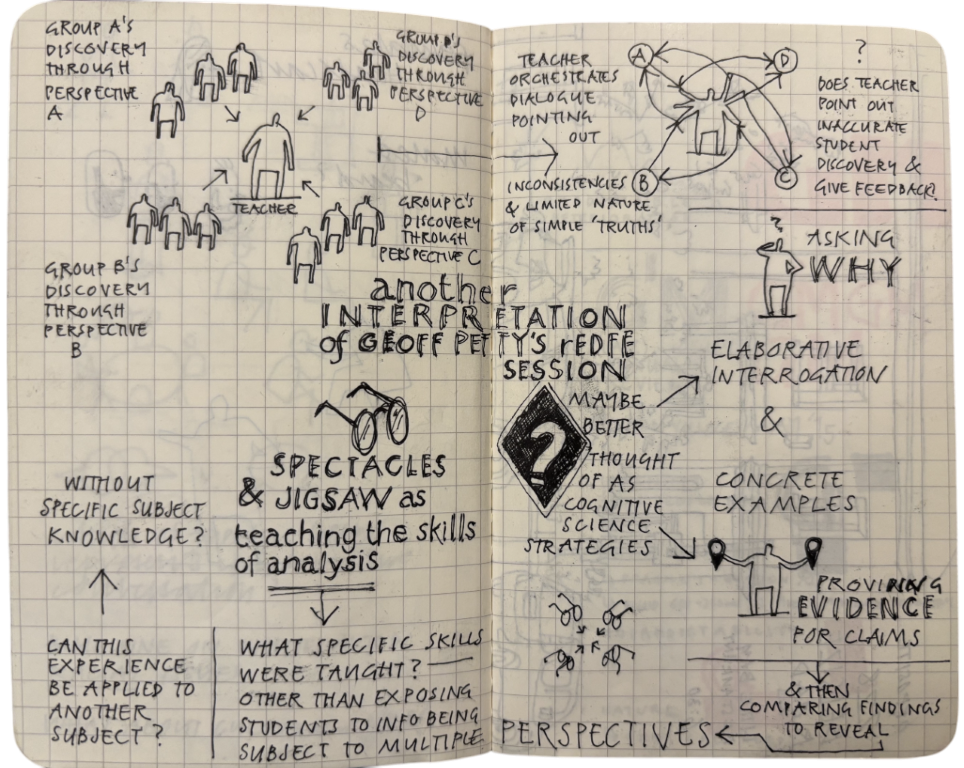

Sketchplanations
A Decade of Drawing the World
Abstract
This will be a very special dual session.
Join Jono Hey as he shares the origin story of Sketchplanations, a decade-long project dedicated to turning complex ideas into simple, memorable visuals.

While Jono presents, Oliver Caviglioli will be taking live sketchnotes: quietly building a visual synthesis of the key ideas, examples, and audience questions (the image below is a sample of the kind of real-time sketch he'll create).
You'll see how little pictures spark big conversations and illuminate challenging concepts through clarity and creativity. Attendees will gain insight into Jono's unique visual storytelling process and how sketching can build a visual encyclopedia of ideas that enhances personal learning, note-taking, and communication. After the talk and Q&A, Oliver will reveal his sketchnote and spend 10-15 minutes walking through his drawing, sharing his reflections on the structure of the session, the pedagogical choices, and how visual abstraction supports memory and understanding.
Speaker Bio

Jono Hey
Jono Hey is a visual storyteller, illustrator, and creator of Sketchplanations, a widely celebrated project that simplifies complex concepts through hand-drawn sketches. With a background spanning software development, education, and visual communication, Jono crafts visuals that help people understand and remember ideas more effectively. Over the past decade, he has built a vast visual encyclopedia of explanations that inspire curiosity and dialogue worldwide.